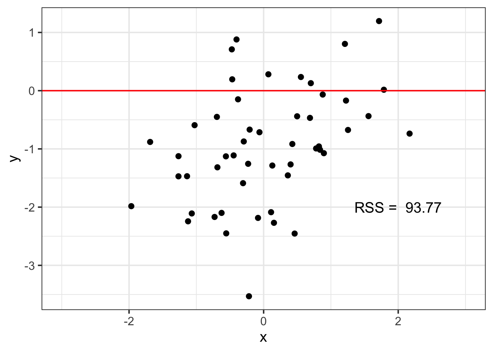

In this lab we will learn more about how to think about linear functions and how to build and evaluate linear models.
LEARNING OBJECTIVES
lm()Go to the course RStudio Cloud Workspace and locate the folder for the lab assignment, which should be named Assignments: Module 8.
First, open the R Markdown document mod-08-lab.Rmd and Knit it.
Make sure it compiles without errors and you can preview the output within the Viewer Pane.
The output should also be automatically saved as an .html file with the same name.
Unlike our previous labs, this lab will not be entirely contained in an Rmarkdown notebook. Instead we will begin with paper and pencil. Graph paper has been provided for you to complete the following exercises.
First, we’ll begin by drawing some lines based on a set of parameters for slope and y-intercept.
Next, we will do some paper-and-pencil prediction (ok you can use a calculator, even the big fancy calculator that is R to do this.)
Copy and paste the code below into your starter file. Then play around with different values for intercept1 and slope1 to see if you can find a nicely fitting line. Note how the RSS change as you try different numbers. You should be able to find an RSS value near 40.

Read in the simd2.csv data as simd2 and copy and paste the code below into your starter file. Copy and paste the code below into your starter file. Play around with different values for intercept2 and slope2 to see if you can find a nicely fitting line. Note how the RSS change as you try different numbers. You should be able to find an RSS value below 85 or better.
Note that the plot_reg_rss() function is created in the helper file! Check out that file to see what the code does.
We will use a dataset of height and weight measurements of !Kung San people collected by Nancy Howell. We will use the data in the howell1.csv file.
Let’s separate the adults from the children, and then we will start by examining the measurements of the children.
Since you are probably itching to fit an lm() model by now, let’s break the rules a bit and go ahead and fit one like we did in the lectures.
Fit a model of weights predicted by heights using the data from the children in the Howell sample. Call your model fit_children.
Now let’s see if our model is any good. We’ll begin with some model checks.
I’ve defined the following three functions to help you, copy and paste this code over to your notebook to use these functions.
Take a moment to examine these functions to see if you can understand how they work. They mostly involve pulling the residuals out of the fit object and then using the familiar ggplot tools we have used (with the exception of the q-q plot function, that uses some ggplotting techniques that won’t be as familiar).
plot_residual_hist <- function(fit){
tibble(residual = fit$residuals) %>%
ggplot(aes(x=residual)) +
geom_histogram()
}
plot_qq <- function(fit){
tibble(residual = fit$residuals) %>%
ggplot(aes(sample = residual)) + # NOTE: stat_qq* expect a sample aesthetic
stat_qq() +
stat_qq_line() +
labs(x="Theoretical quantile", y = "Observed quantile")
}
plot_residual_predicted <- function(fit){
tibble(
predicted = fit$fitted.values,
residual = fit$residuals
) %>%
ggplot(aes(x = predicted, y = residual)) +
geom_point() +
geom_hline(yintercept = 0)
}Create the following plots to evaluate fit_children:
Describe what you notice about each of the plots. Does the model pass our checks?
Ok let’s plot the data to see what has been going wrong.
Make a scatterplot of heights and weights for the children data. What does the relationship look like?
The function below will create a plot of your model predictions and observed data. Use the function to create a plot, and compare what you are seeing in this plot with what you see in the residuals plots.
The code here uses a couple functions from the modelr package that we will learn more about later. It is worth spending a bit of time inspecting how this function works, but ultimately for now it is OK to just use it even if you don’t quite follow every line.
plot_height_weight_preds <- function(fit, data){
preds <- data_grid(data, height = seq_range(height, 100),
.model = fit) %>%
mutate(predicted = predict(fit, .))
data %>%
ggplot(aes(x=height, y=weight)) +
geom_line(data = preds, aes(x=height, y = predicted), color = "blue", size=1) +
geom_point(alpha=.5)
}
The following two questions are “bonus” questions that go beyond what was covered in the lecture. We would like you to make an earnest attempt at them, but we may just be grading for effort.
The term “linear models” can sometimes feel like a bit of a misnomer—linear models can actually capture some non-linear relationships.
One way to do this is by adding polynomial terms to our regression model. If we take a variable and transform it by raising it to a power, this produces a curvilinear pattern. If we include such a transformed variable in our regression, we can capture non-linear patterns in data.
Here are some examples:
Add polynomial terms to your model to capture this curvilinear relationship. You can do this directly in lm() by wrapping your predictor in the poly() function and specifying the degree of the polynomial.
Create a new model fit_poly that includes second and third degree polynomial terms (i.e. that adds predictors for \(x^2\) and \(x^3\)). Examine the help for poly() if you need help.
Finally, create a residual plot and a plot of the predicted values against observed children’s values using plot_height_weight_preds() for the new fit_poly3 model. What do you see?
Now go back through your write up to make sure you’ve answered all questions and all of your R chunks are properly labelled.
SUBMITTING YOUR WORK
Once you decide as a team that you’re done with this lab, change the YAML output from html_output to pdf_output. Now knit the document to produce a final PDF file. Make sure all team members have access to the PDF and each person needs to upload the PDF as a Canvas assignment.